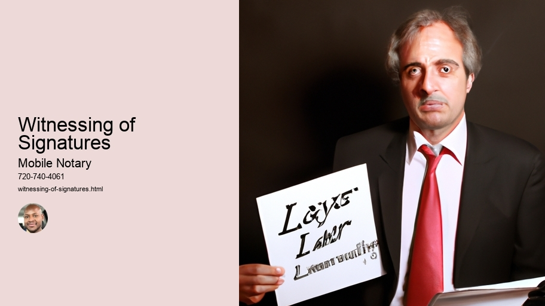

News
Notarization
Notarization
Notary Seals Stamps
Apostille Certificates
Certification of Documents
Authentication of Signatures
Verification of Identities
Affidavits and Oaths
Witnessing of Signatures
Travel Fee Reimbursement
Anotarization Fees
Power of Attorney Verifications
Mobile Notary Services
Mobile Notary Services
Remote Online Notaries RON
Video Conferencing
Electronic Signature Platforms
Digital Document Management
Document Scanning
Travel Fee Reimbursement
Mobile Printing
RealTime Document Tracking
MultiState Compliant
Background Checks
Signing Agents
Signing Agents
Notary Publics
Notary Publics
Jurats
Jurats
About Us

Witnessing of Signatures
Notarization
Notarization is a process that (can be a bit confusing). It's the act of certifying documents (by an authorized person). It's done to prove the authenticity of certain documents and verify that they're legally binding. Notaries are responsible for verifying the identity of signatories, ensuring that all parties understand the contents of a document and signing it themselves - this is known as notarizing! This process can help protect against fraud and disputes in the future, making it incredibly important when dealing with legal transactions.
However, notarization isn't always necessary. In some cases, having a document witnessed by two people may suffice. For example, if one party isn't able to appear in person before a notary then having two witnesses may qualify instead - although this depends on state law. Furthermore, there are some documents which don't require any form of authentication at all! For instance, you don't need to have your will or power of attorney notarized in order for them to be valid.
In conclusion, notarization is an essential part of many legal transactions but it's important to check whether it's actually required or not. As such, understanding what it entails can save time and money - plus prevent any unnecessary hassle down the line! And remember: never sign anything unless you fully understand its contents!
Apostille Certificates
An Apostille Certificate is an important document that certifies the authenticity of a signature, seal or stamp on a public document. It's commonly used when international transactions require the acceptance of documents from one country to another.
However, obtaining an Apostille Certificate can be difficult and time-consuming! The process involves verifying the document with its issuing authority and then submitting it to the relevant government agency for certification. (It may also require additional authentication steps if the document is being sent to a foreign country.)
Once an Apostille Certificate has been obtained, it will enable parties in different countries to recognise and accept each other's official documents. This means that contracts, court orders and even marriage certificates can be validly accepted across borders. In effect, apostilles give documents legal weight and allow them to be exchanged internationally without any doubt as to their validity or authenticity.
Furthermore, Apostille Certificates are often required for those who wish to live or work abroad; they demonstrate that all necessary paperwork has been completed correctly and verified by both national governments. Thus, providing reassurance that all necessary checks have been undertaken before allowing someone entry into another country.(Plus, not having one could lead to serious problems at border control!)
In conclusion, getting hold of an Apostille Certificate is essential for anyone planning on doing business in multiple countries - without it your documentation won't be recognised! Don't risk jeopardising your plans; make sure you understand what's needed beforehand so you have everythig covered!
Affidavits and Oaths
An affidavit is a sworn statement (or declaration) made under oath. It's used in court proceedings and other legal matters as proof of certain facts. An oath, on the other hand, is a solemn promise or pledge to tell the truth. Both affidavits and oaths are taken seriously by courts and can be used to prove someone's honesty or credibility when it comes to testifying in a court of law!
However, there are some differences between an affidavit and an oath. An affidavit is usually signed in front of a notary public or other authorized officer who can witness the signature being made. Oaths, on the other hand, can often be verbalized instead of written down. While both documents require that the signer swear under penalty of perjury that they are telling the truth, only an affidavit needs to be formally witnessed by another person.
Moreover, affidavits tend to be more detailed than oaths because they provide specific information about what is being sworn to in writing. In contrast, an oath may simply contain language such as “I swear before God” without providing any details about what is being sworn to. Additionally, affidavits usually have consequences if proven false while an oath does not typically carry this kind of consequence since it isn't legally binding like an affidavit would be!
In conclusion, while both affidavits and oaths serve similar purposes in court proceedings and other legal matters as evidence of truthfulness and honesty, they do have their differences which must be taken into account when deciding which one should be used for a particular situation. As always, it's important to seek professional advice regarding any legal matter you may have!
Travel Fee Reimbursement
Travel fee reimbursement is something that many people are unaware of! Although not always available, it can be a great way to save money when travelling. (It) isn't always easy to obtain, but it's worth looking into for those who have the option. Firstly, it's important to check with your employer if they offer any travel fee reimbursements. Some companies do offer this as an employee benefit and can significantly reduce the cost of travelling for work purposes.
Also, (it) pays to research online for other potential offers of travel fee reimbursement - there may be discounts or special offers available through certain sites or retailers which could make your trip more affordable. Moreover, keep in mind that you're likely to find cheaper deals on flights and accommodation if you book far enough ahead of time - so don't delay your planning too much!
Finally, don't forget about insurance! Emergency cover can come in handy if things go wrong during your travels and having a good policy will help ensure that any costs incurred due to unexpected events are covered. Plus, sometimes even a basic insurance policy will provide some form of travel fee reimbursement should something happen while abroad.
In conclusion, there are various ways to save money when travelling - whether through employer benefits, discounted rates or insurance policies. Doing research beforehand and being prepared is key; so take some time now before booking your next trip away and see what savings you could make!
Anotarization Fees
Power of Attorney Verifications
Power of attorney verifications are an important part of a legal process. They ensure that the person you have chosen to represent your interests (or yourself) is authorized to do so. Power of attorney verifications can be required for a variety of reasons, ranging from simple financial transactions to more complex affairs such as medical decisions and estate planning. It's critical to make sure that the person you give authority to is legally allowed to act on your behalf.
Yet, power of attorney verifications can be cumbersome and time-consuming! You must pay attention to detail and provide accurate information in order for the process to move forward smoothly. Failure to do so may result in delays or a denial of your request. Furthermore, it's essential that you understand what rights the person you’ve designated has – and does not have – when acting on your behalf. Neglecting this could lead to serious repercussions down the road!
Overall, power of attorney verifications are crucial in many legal matters; however, they must be handled carefully in order for everything to go as planned. Thus it's recommended that you seek out professional help if necessary - after all, getting things right the first time will save lots of trouble later on! To conclude, it's vital that these documents are filled out correctly; otherwise mistakes could render them void or invalid altogether!
Frequently Asked Questions
What is a mobile notary?
A mobile notary is a licensed, bonded, and insured individual who can travel to any location requested by the client to witness signatures.
What documents does a mobile notary typically witness?
A mobile notary typically witnesses documents such as wills, trusts, contracts, real estate documents, loan applications and more.
How long does it take for a signature witnessed by a mobile notary to become legally binding?
Once the document has been signed in front of the Mobile Notary and all of the required information is collected from all parties involved (namely proof of identification), the document becomes legally binding immediately.
Are there any special requirements when using a mobile notary?
Yes - All parties involved must have valid government issued photo identification and be physically present during the witnessing process.
Witnessing of Signatures